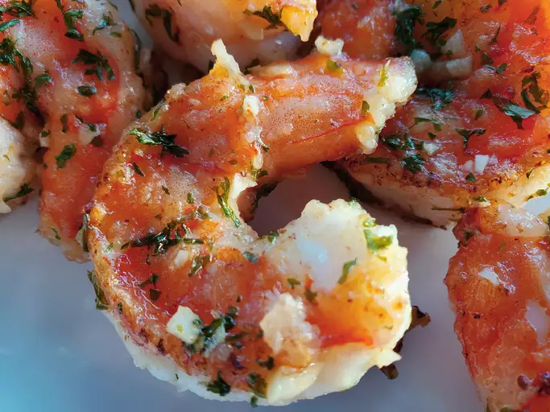

Garlic Shrimp

Description
Delicious garlic shrimp
Ingredients
- 1 ½ tablespoons olive olive
- 1 pound shrimp, peeled and deveined
- salt to taste
- 6 cloves garlic, finely minced
- ¼ teaspoon red pepper flakes
- 3 tablespoons lemon juice
- 1 tablespoon caper brine
- 2 tablespoons cold butter, cut into 4 equal pieces, divided
- ⅓ cup chopped flat-leaf parsley, divided
- 1 teaspoon water, or as needed
Directions
- Heat olive oil in a heavy skillet over high heat until it just begins to smoke. Place shrimp in an even layer on the bottom of the pan and cook for 1 minute without stirring.
- Season shrimp with salt; cook and stir until shrimp begin to turn pink, about 1 minute.
- Stir in garlic and red pepper flakes; cook and stir 1 minute.
- Stir in lemon juice, caper brine, 1 piece butter, and 1/2 of the parsley. Cook until butter has melted, about 1 minute.
- Reduce heat to low and stir in remaining 3 pieces butter. Cook and stir until butter has melted, sauce is thick, and shrimp are pink and opaque, 2 to 3 minutes.
- Remove shrimp with a slotted spoon and transfer to a bowl; continue to cook butter sauce, adding water 1 teaspoon at a time if too thick, about 2 minutes. Season with salt.
- Serve shrimp topped with the pan sauce and remaining parsley.